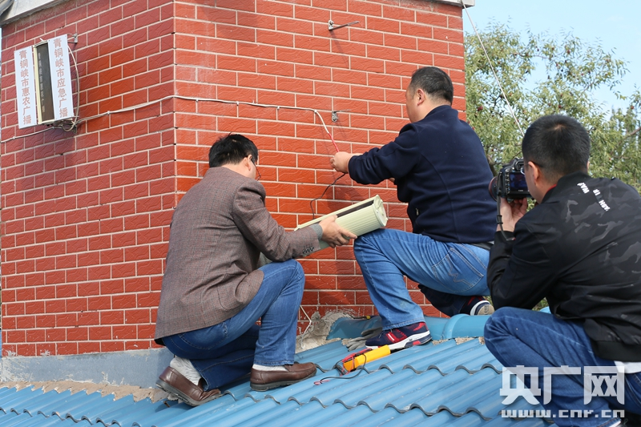

宁夏 青铜峡

工作人员检修广播设备
工作人员检修广播设备
听说有人上门检修广播设备，正在村部排练舞蹈的马淑萍赶紧向老师请了假，骑着电动车回了家。马淑萍所在的大坝镇韦桥村，这些天喜事临门。他们所在的宁夏引黄古灌区申遗成功，马淑萍想听听广播里咋说这事儿的，没想到，家里广播却不响了。
马淑萍：（收音机白噪音）就是这种情况，想听听不成。
维修人员：这就坏了，以后收音机如果有问题，向村干部反映，维护维修，如果维修不了，马上换一个。
韦桥村地处黄河岸边，自古盛产优质水稻。可老天帮忙，也还需要自个儿勤奋。马淑萍是村里有名的“女强人”，凭着股吃苦耐劳的劲儿，她把自家的小日子经营得有滋有味儿。她说，从广播里听出“致富经”，是每天不落的“功课”。
马淑萍：我每天早上起来先把收音机打开，打开以后就干其他农活儿，非常方便。我最喜欢听乡村之声，一些对农民有关的节目。听说最近要开十九大，我们非常想听到习总书记的讲话。